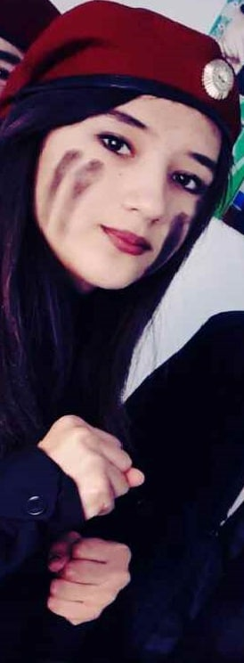
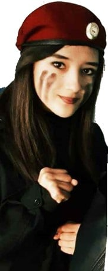

Toki hayot ekanman... 💔
— Assalomu aleykum. To'g'risini aytsam nimani yozishni bilmayapman shuning uchun esimga tushgan voqealarni bir boshidan yozib ketaveraman...
 Men birinchi marta sizni mana shu rasmlardan ko'rib yoqtirib qolgan edim, xoh ishoning xoh ishonmang kechayu kunduz shu rasmlarga tikilib turaverardim. Rasmlarni telefonimga o'tkazib olganimdan keyin ertalab turishim bilan telefonimni qidirardim, kechasi soat 11 bazida 12 gacha anashu 3ta rasmga tikilib turardim. Bu rasmlarga juda bog'lanib qolgandim, qanaqa ish qilayotgan bo'lsam ham har har zamonda bir telefonimni olib galeriyasiga kirib shu rasmlarga qarab yuzizni ayniqsa ko'zlarizni kattalashtirib tikilib qarardim keyin yana ishimni davom ettirardim, lekin ishlayotganimdayam ko'z oldimga faqat anashu rasmlar kelardi, xuddi nos chekadigan odamlarday manam rasmga qarab sog'inishga berilib ketgandim. Rasmlariz bor lekin hayotda sizni hali ko'rishga ulgurmagandim to'g'rirog'i biror marta ham ko'rmagan edim. Keyin bir kuni sinfdoshlarim bilan maktab oshxonasida o'tirganimizda bir qiz qora ko'ylakda telefon titkilagancha sport zal eshigi oldida sinfdoshlarini kutayotganini ko'rib qoldim. O'shanda mandan baxtli odam yo'q edi dunyoda, sizni birinchi marta o'sha joyda ko'rdim. Ishonasizmi oyoqlarim dag' dag' qilib yuragim dukkilab urib ketdi. Keyin sizga tikilib turganimni ko'rib sinfdoshlarim kuldi, kim kim deb hammasi so'rardi, man nima deyishni bilmay qoldim qarindoshim deymi tanishim deymi umuamman tilim aylanmay qoldi. Keyin sinfdoshlarim bilan oldizdan o'tib ketgandik telefon titkilab turgandiz o'shanda. O'sha payti shunaqangi sizga qarab mahliyo bo'lib qoldimki tasavvur ham qilolmaysiz. Xuddiki yerdagi farishtani ko'rganday bo'ldim o'ziyam. Bunchalik chiroyni o'shangacha ko'rmagan edim. Shunchalar chiroyli edizki odamni bittada rom qilib qo'yishiz hech gap emas edi. Sochlar yoyilgan chiroyli ko'rinishda sport zal eshigi yonida telefon titkilab turardiz yuz, lab, ko'z, qoshlariz shunaqangi odamni o'ziga rom qilardiki bunchalik chiroyni hali ko'rmagan edim. Oldizdan o'tib ketayotib qarashga uyaldim, lekin qaramaganim uchun ancha vaqt afsuslandim. O'sha kundan keyin shunaqangi sizni yoqtirib qolgan edimki so'z bilan tariflab bo'lmaydi. Keyin qanchadir muddat sizni kuzatishni boshladim, jismoniy tarbiya darsiga chiqqanizda sinfimiz oldidagi derazadan sizga tikilib turardim va bir kuni sizam meni ko'rib qoldiz, o'sha payt bir qaraganizni o'zida oyoqlarim qaltiray boshladi. Shunaqangi hayajonlandimki... Keyin xatlar yozishni boshladim, o'shanda menga har xil gaplar keldi, bergan xatingni uydagilariga olib borib ko'rsatibdi, ishonmayapti, xatni o'qib dugonalari bilan kulib o'tiribdi, dugonalariz ham sizga men haqimda juda adabiy yozadiye xatini deb aytgan gaplarigacha meni qulog'imga yetib kelgandi. Keyin men uydagilariga ko'rsatgan degan gapni eshitib oldiniga sal qo'rqdim keyin esa nima bo'libdi rost gapku nimasidan qo'rqaman dedimu gazini bosdim. Manimcha o'zi 3 martami xat berganman sizga.
Bu esa sizga bergan birinchi gulimning rasmi. Bu gulni o'zi opamlarni hovlilaridan uzgan edim, keyin esa ertasi kuni asrab avaylab maktabga olib borib yashirib qo'ygandim chunki shunday qilmasam sinfdoshlarim men bilan talashar edida. Keyin tanaffus payti zalda Ozodni ko'rib qoldimda mana bu gulni olib borib ber deb qo'liga tutqazdim. Ozod hoooo vachaaach deb bir qitmirlik qildida gulni sizni oldizga olib ketdi. Keyin telefonidan sizni telegram glavnizni ko'rsatdi, qarasam xuddi shu rasm turibdida. Shunaqangi xursand bo'lib ketdim dunyolarga sig'magandim o'sha kuni. Birinchi gulimni olib birdaniga glavniga qo'ydi deb shunaqangi sevindim Ozod ham yana vachaaaach deb bir qidiqlab qo'ydida sinfga kirib ketdi. shunday qilib o'sha kuni mendan baxtli odam yo'q edi. Keyin bir kuni uyda ishlab turganimda Ozod telefon qildida ko'chani boshiga chiq dedi. O'zi o'sha payt taxmin qiluvdim siz kelayotganizni, keyin ko'chani boshiga chiqdimda kutib turuvdim qarasam siz bilan anora orqadan ozod bilan shaxzod kelayotgan ekansizlar. O'sha kuniyam juda xursand bo'lgan edim chunki sizni ko'rish men uchun bayramga aylanib qolganday edi go'yo. Bir kuni esa informatika xonasida kompyuterda ishlab turganimda atoyev aytdila hozir 11-a ni darsi deb. Keyin atoyev sinflarizga borib silani olib kelgandila. Keyin men kompyuterimdan sizni rasmlarizni ozodga ko'rsatib turgan edim orqadan shodmon ko'rib qolganini sezmapman.
Shodmon kompyuterimdan mana shu holatni ko'rib qolgan edi. Keyin esa dars tugagandan keyin sizlar sinflarizga bordila men ham narsalarimni yig'ishtirib sinfimga ketayotib tashqarida Shodmonni ko'rdim. U meni to'xtatdida boyagi kompyuteringdagi rasmlar qayerdan keldi deb so'radi, men garangchani qo'shib qanaqa rasmlar deb so'radim, jinnilikga solma o'zingni Sevinchni rasmlarini qayerdan olding deb yoqqamdan oldi keyin men unga nima ishing bor sandan so'raymanmi degandim, o' o'zingdan ketma o'chirib tasha rasmlani tushundingmi deb do'q qilib gapirdi, tushundingmi degandan tushundim deb tezlik bilan javob bergandim nima deyishni bilmay yo'qol deb oldidan haydab yuboruvdi keyin. (vaxaxaxa) Shunday qilib shodmon bilanam tanishib oluvdim. Keyin bir kuni tanaffus payti zalda (semiz) Og'abekni ko'rib qoldimda Sevinchni chaqir dedim. Og'abek hayron bo'lib qaysi sevinch jo'raqulovami dedi, ha o'shani chaqir dedim og'abek esa hooo deb kulib sinfga kirib ketdida sizni chaqirib chiqgandi. O'shanda qog'ozchaga o'zimni telefon raqamimni yozib sizga bergandim agar eslay olsayiz. Keyin shunday qilib 5-10 minut o'tar o'tmas dars payti Donyor bilan shaxzod yana kimlardir bor edi bizani sinfni eshigini taqqilatib ustozdan murodni chaqirib yuboring deb so'radi. Keyin ustoz manga qarab chiq qani dedila, tashqariga chiqqanimni bilaman Donyor yoqqamdan olib, o' manga qara sanga yaxshilikcha tushuntirobman maktabga sinfimizni oldiga yana bir marta sani ko'rsam oyog'ingni sindiraman ko'chada nima gaping bo'sa gapirgin lekin maktabda sinfimizni oldigayam birorta qizni oldigayam ko'rmay sani, mazangni qochiraman deb do'q popisa qilib gapirib ketdi. Oldida shaxzod kuliib turgandi... keyin man xay xay deb qo'yuvdim.
Ana endi mana bu voqeaga to'xtaladigan bo'lsak. Buni ozod sizga shu
bolaga yoz yoz degandan keyin manga birinchi marta yozgan paytiz.
o'sha payt yarim kechasi birinchi marta manga yozyapsiz lichkani
ko'rib hayajonlanib ketgandim o'ziyam. shunaqangi xursandchilik bilan
sizga yozgandim o'shanda. keyin yozayotgan paytim onam qo'limda
telefon turganini ko'rib yotib uxla deb bir baqirib bergandila keyin
bo'ldi hozir uxlayman deb yana 10 minutlar siz bilan yozishgandikda
o'ziyam. Lekin qanaqa xursand bo'lib ketganimni tasavvur ham
qilolmasdiz. Qachon siz bilan gaplashishni boshlasam yosh bolaga
o'xshab qolardim o'ziyam hozir ham xuddi shunday. Nima deyotganimni
bilmay qolardim sababi juda hayajonlanib xursandchilik bilan yozib
gaplashardim. Keyin esizda bo'lsa bir kuni uyizga ketayotib ozod mani
tel qilib maktabdan chaqirgandi. Man yugurib chiqib boruvdim o'ziyam
o'sha payti. Shunday qilib kanal bo'yigacha kuzatib qo'ygandik sizni,
o'sha payti esizda bo'lsa sizdan mumkinmi deb uyizga boradigan yo'lni
qo'lim bilan ko'rsatgan edim kuzatib qo'yish manosida siz yo'q deb
jilmayib qo'ygandiz. Lekin o'sha kuni juda xursand bo'lgandim chunki
siz bilan yonma yon orada masofa bo'lsa ham hech bo'lmaganda sizni
yaqindan ko'rib turganimdan shunaqangi xursand edim go'yoki yettinchi
osmonda edim. Lekin mumkinmi degan paytim shunaqangi chiroyli
jilmaygan ediz sizga bo'lgan sevgim yanayam oshib ketgan edi o'shanda.
Xuddi shunday xursandchilik qaysidir yili yangi yilga uyizga borgan
paytimiz bo'lgan edi. O'sha yangi yil kuni ozod manga vada bergandi
san bilan birga uyiga boramiz deb, keyin man yarim kechasi uyga
qaytganimdan keyin ozod telefon qilib ko'cha chiq dedi chiqsam ko'chada
ekan keyin man ozod dan bordingmi san desam yo'q sinfdoshlarimni
hammasi borgan man borganim yo'q bir man qoldim ketdik dedi. O'zi
o'sha payti kech uyga qaytganim uchun uydagila urishgandi lekin man
o'sha kecha uyga kelib uydagilani uxlatib yani uxlab bo'lganlaridan
keyin ko'chaga ozodni oldiga chiqqan edim. Ozod yur yur boshqa bunaqa
imkon bo'masligi mumkin dediyam uydagila uyg'onib qolsala mani
o'ldiranla deb bormayman degandim ozodga. Bir past turib o'yladim
keyin hozir bormasam keyin birinchi marta ko'rgan kuni qaramay
oldizdan o'tib ketganimdan keyin afsuslanganday yana afsuslanib
yuraman o'shanda borsam bo'larkan deb dedimdayu ozodga ketdik borsak
borib kelaylik tez dedim. O'sha payti uy kiymida edim ozod kiymingni
alishtirib chiq degandi yoq vaqt yo'q borib kelaylik dedim man ozodga,
shunday qilib yugurib borishga qaror qildikda uyizgacha chopib chopib
kulib kulib boruvdik o'ziyam. Keyin darvozayizni oldiga borib ukayizni
chaqirdikda Sevinchni chaqir degandik o'shanda azizbek nimaga dedi,
keyin man azizbekga ishimiz bor chaqir dedim, mani gapimni eshitib
yani qiz bolaga yangi yil kechasida kimni qanaqa ishi bo'lishi
mumkin... qisqasi bu gapimni eshitib ozodni ichagi uzilib tushguncha
kuldi o'ziyam. Eng daxshatlisi ukayiz kirganda nagli dadayizni
oldilariga borib dada apamni ko'chada ikkita bola ishi bor ekan
chaqirib ber deyishyapti debtida o'ziyam. Bir payt qarasak amakim
bilan yangam vajohat bilan man bilan ozodni oldilariga kelishyapti.
Ularni ko'rib ozod manga qarab ibi qara dadasi bilan onasi keloptila
o'lding dedi. Man u gapni eshitib ado bo'ldim o'ziyam, keyin oldimizga
keldilada salom alek qildila ozodni tanidila mani sinfdoshiz deb
bildilami kiringla kiringla deb uyga kiritdila shunday qilib o'sha
kuniyam yarim kechasi borib sizni ko'rib keyin qaytuvdik. Afsuski
ko'chada uchalamiz tushgan rasmimizni topolmadimda. He mayli qisqasi
o'shandayam juda xursand bo'lgandim lekin. O'sha kunlar ham mana o'tib
ketdi...
Ha maylida hozir yozaman desam yana juda ko'p narsa yozishimga to'g'ri
keladi, keyin siz ularini o'qiysizmi yo'qmi o'zi ancha narsa yozib
qo'ydim... Endi Xulosaga o'tsam ham bo'ladi. SEVINCH bugungi tavallud
ayyomingiz bilan chin qalbimdan tabriklayman. Ota-Onayizni,
Xo'jayinizni, farzandizni barcha do'stlarizni baxtiga sog' omon
bo'ling ilohim. Hech qachon yuzingizdan tabassum arimasin va hech
qachon ko'zingizdan quvonch tomchilaridan boshqa yig'ilar to'kilmasin
deb qolaman. To'g'risini aytsam tabriklashga unchalik yoqman shuning
uchun xafa bo'lmaysiz. Agar hikoyam davomida xato gaplar yoki sizga
yo'qmaydigan so'zlardan foydalangan bo'lsam ming bor uzr so'rayman.
Allohdan siz uchun kuchli iymon etiqod, matonat, sabr, omad va
oilayizga baxt-u saodatlar tilab qolaman. Allohim doim siz bilan shuni
esizdan chiqarmang. Bilaman bu saytni yasashim bunaqangi gaplarni
yozishim gunoh lekin o'zimni ushlab turolmadim axir Allohim kechirimli
zodku kechirishiga ishonaman. Umid qilamanki shu hikoyam orqali sizni
ozgina bo'lsada kuldirishga erishdim. Gapim oxirida shuni aytamanki:
Siz boshqasini sevganizdayam, Sizni sevib qolaveraman SEVINCH...
Yana bir bor Tug'ilgan kuningiz bilan chin qalbimdan tabriklayman.
Baxtli bo'ling 💌